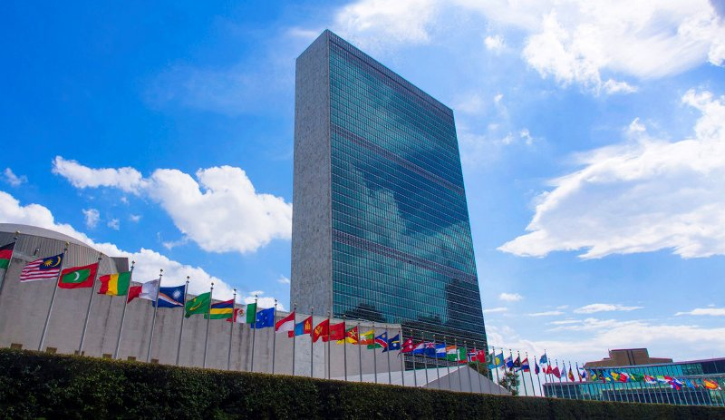

Միավորված Ազգերի Կազմակերպություն
Հեղինակ՝ Ռաֆիկ Մարտիրոսյան
Միավորված ազգերի կազմակերպության
Միավորված ազգերի կազմակերպություն, միջկառավարական կազմակերպություն, որի առաջադրանքն է պահպանել միջազգային խաղաղություն ու անվտանգություն, ազգերի միջև զարգացնել բարեկամական հարաբերություններ, հասնել միջազգային համագործակցության և ազգերի միջև գործողությունների ներդաշնակման կենտրոնում լինել։

ՄԱԿ-ի գլխամասային գրասենյակները գտնվում են Մանհեթեն և Նյու Յորք քաղաքներում ու համարվում են արտաօրենսդրական։ Մյուս գլխավոր գրասենյակները տեղակայված են Ժնևում, Նայրոբիում և Վիեննայում։ Կազմակերպությունը հովանավորվում է անդամ երկրների պարտադիր և կամավոր ներդրումներով։ Նպատակների թվում են միջազգային խաղաղության ու անվտանգության պահպանումը, մարդու իրավունքների պաշտպանությունը, մարդասիրական օգնության տրամադրումը, կայուն զարգացման խթանումը և միջազգային օրենքի հետևումը։
ՄԱԿ-ը աշխարհի ամենամեծ, ամենահայտնի, միջազգայնորեն ամենաշատ ներկայացված և միջկառավարական ամենահզոր կազմակերպությունն է։ 1945 թվականի հոկտեմբերի 24-ին՝ Երկրորդ համաշխարհային պատերազմի ավարտին, ստեղծվեց այս կազմակերպությունը՝ հետագա պատերազմները կանխարգելելու նպատակով։ Հիմնադրման պահին ՄԱԿ-ն ուներ անդամ 51 երկիր, այժմ՝ 193: ՄԱԿ-ը անարդյունավետ Ազգերի լիգայի իրավահաջորդն է։
1945 թվականի ապրիլի 25-ին կառավարության ներկայացուցիչները հանդիպեցին Սան Ֆրանցիսկոյում՝ համաժողով անցկացնելու և ՄԱԿ-ի կանոնադրությունը կազմելու նպատակով, որն ընդունվեց 1945 թվականի հունիսի 25-ին Սան Ֆրանցիսկոյի Օպերայի տանը և ստորագրվեց 1945 թվականի հունիսի 26-ին Պատերազմի վետերանների հուշահամալիրում
գտնվող Հերբսթ թատրոնում: